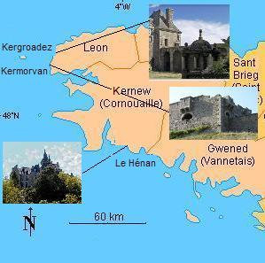
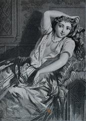
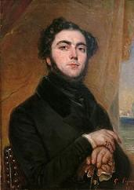
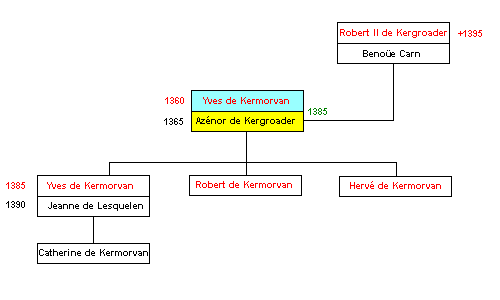
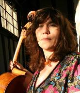

Azénor la Pâle
The Pale Azénor
Dialecte de Cornouaille
|
- par Madame de Saint-Prix: t. 92, 100 de la collection Penguern, "Renean ar Glas". - par De Penguern: t. 93,5,9,11; t. 95, 175, "Renean Glas". - par Lédan, MS IV, "Gwerz Reneic ar Glaz". - par Luzel, in "Gwerzioù", t. 1: "Renea ar Glaz", (2 fois: Plouaret, 1845 - 1847). - par Gourvil & Laterre, dans "Kanaouennoù Breiz Vihan", "Reneadik C'hlas", (Carhaix). |
 |
- by Madame de Saint-Prix: t. 92, 100 of the Penguern Collection, "Renean ar Glas". - by De Penguern: t. 93,5,9,11; t. 95, 175, "Renean Glas". - by Lédan, MS IV, "Gwerz Reneic ar Glaz". - by Luzel, in "Gwerzioù", t. 1: "Renea ar Glaz", (2 times: Plouaret, 1845 - 1847). - by Gourvil & Laterre, in "Kanaouennoù Breiz Vihan", "Reneadik C'hlas", (Carhaix). |
Ton
(Ré majeur. Même mélodie que le chant suivant!...)
| Français | English |
|---|---|
|
1. Pauvre Azénor qu'on fiança A celui qu'elle n'aimait pas! O! A celui qu'elle n'aimait pas! 2. Pâle Azénor qu'on fiança Mais pas à son doux clerc, hélas! O! Mais pas à son doux clerc, hélas! II 3. Ce jour-là, la pâle Azénor, En robe de soie couleur d'or, 4. A la fontaine se trouvait Seule, à faire avec du genêt 5. Un bouquet, un bouquet charmant Pour son doux clerc de Mezléan. 6. C'est là donc qu'elle était assise Quand vint à passer seigneur Yves. 7. Seigneur Yves qui chevauchait Au grand galop un cheval bai. 8. Bien qu'il allât au grand galop Il l'aperçut au bord de l'eau: 9. - Ma foi, que cette fille est belle! Je n'aurai d'autre femme qu'elle! - III 10. Le clerc de Mezléan disait Au gens du manoir assemblés: 11. - Il me faut un messager qui A ma douce porte ce pli. 12. - Un messager, certainement. Mais arrivera-t-il à temps? 13. - Ma petite servante, dis, Que vois-tu donc d'écrit ici? 14. - Azénor, moi je n'en sais rien A l'école je n'étais point. 15. Azénor, moi je n'en sais rien. Ouvrez donc et vous verrez bien. - 16. Le pli posé sur ses genoux, A le lire de bout en bout 17. Elle eut bien du mal, alors que Les larmes emplissaient ses yeux. 18. - Cette lettre ne peut mentir: Il est sur le point de mourir! - IV 19. Et tout en parlant de la sorte Elle descendit vers la porte. 20. - Que se passe-t-il donc ici Qu'au feu deux broches l'on ait mis? 21. Deux broches près de la marmite, La grande broche et la petite? 22. Qu'y a-t-il? Ce n'est pas pour rien Qu'on voit venir ces musiciens 23. Et qu'on a fait venir céans Tous ces pages de Kermorvan! 24. - Ce soir il ne se passe rien. Mais vous vous mariez demain. 25. - Si mes noces ont lieu si tôt, J'irai me coucher dès tantôt. 26. Mon corps ne quittera mon lit Sinon pour être enseveli. - 27. Dans sa chambre à l'aube suivante Entra sa petite servante, 28. Laquelle en ouvrant la croisée, Tout étonnée, s'est écriée: 29. - Je vois de la poussière au loin: Une cavalcade en chemin. 30. A sa tête le seigneur Yves, - Qu'une chute nous en délivre! - 31. Suivent chevaliers, écuyers, Des gentilshommes par milliers. 32. Lui, juché sur un cheval bai Croulant sous un harnais doré, 33. Un harnais doré tout du long Et un rouge caparaçon. 34. - Maudits soient ceux qui l'ont mandé Mes père et mère les premiers! 35. La jeunesse ici bas jamais Ne fait ce que son coeur voudrait. - V 36. La pâle Azénor s'en alla A l'église en pleurs ce jour-là. 37. Elle demandait en passant Près du manoir de Mezléan: 38. - O mon mari, j'aimerais tant, Entrer ici juste un moment. 39. - Aujourd'hui, certainement pas Demain, si tel est votre choix. 40. Azénor ce jour-là pleurait. Personne ne la consolait. 41. Personne ne la consolait. Seule la servante disait: 42. - Madame, cessez de pleurer. Dieu voudra vous dédommager. - 43. A midi devant la chapelle, Azénor pleurait de plus belle. 44. Et, passé le seuil de l'église, Tous sentent que son coeur se brise. 45. - Approchez ma fille, je dois Vous mettre cette bague au doigt. 46. - D'amertume j'ai l'âme pleine, N'épousant point celui que j'aime. 47. - C'est pécher que parler ainsi Quand on épouse un tel mari: 48. Riche en or autant qu'en argent. Tout ce qui manque à Mezléan. 49. - Et quand j'irais mendier mon pain? Cela ne vous regarde en rien! - VI 50. Petite Azénor demanda Lorsqu'à Kermorvan elle entra. 51. - Ma belle-mère, s'il vous plait, Dites, mon lit, où l'a-t-on fait? 52. - A côté du chevalier noir Je vous y conduis. Venez voir. - 53. A genoux soudain elle tombe Auréolée de boucles blondes, 54. Puis jusqu'au sol, le coeur brisé: - Mon Dieu, n'avez-vous point pitié? - VII 55. - Ma mère, dites-moi, madame, Savez-vous où donc est ma femme? 56. - Elle est dans la chambre du haut. Consolez-la donc au plus tôt. - 57. Quand dans sa chambre il est entré, Comme un veuf il fut salué. 58. - Par la Vierge et la Trinité! Quoi? Pour un veuf vous me prenez? 59. - Je sais, vous n'êtes point veuf, certes, Mais dans peu de temps allez l'être. 60. C'est ma robe de fiançailles Trente écus, pensez-vous qu'elle vaille? 61. Je la destine à ma servante Pour son obstination patiente 62. A me porter de Mezléan Des lettres perdues...tant et tant. 63. Et ce manteau neuf que voilà, Ma mère l'a brodé pour moi. 64. Qu'aux prêtres on en fasse don Qui prieront Dieu pour mon pardon. 65. Quant à ma croix, mon chapelet, Mon mari, veuillez les garder. 66. Ils vous feront un souvenir De ces noces qui vont finir. - VIII 67. - Au hameau que s'est-il passé Qu'on fasse ainsi le glas tinter? 68. - Azénor est morte aujourd'hui Dans le giron de son mari. - 69. Sur une table ronde on a Composé la gwerz que voilà, 70. Près de Pont-Aven, au Hénan. Pour qu'on chante à jamais ce chant. 71. Que le barde au manoir a fait, Qu'une demoiselle a copié. Traduction Christian Souchon (c) 2008 |
1. Engaged is Azénor the Pale, But her own choice did not prevail! O! But her own choice did not prevail! 2. Engaged is the pale Azénor, Engaged is the pale Azénor! O! Not to her dear clerk, her lover! II 3. Once she sat on the fountain sill Clad in a dress of yellow silk. 4. Next to the well she sat her lone Arranging fresh blossoms of broom, 5. So as to make a fine bouquet To give the Mezléan clerk that day. 6. There she sat by the waterside, When the Lord Yves happened to ride, 7. To ride that way upon a white Charger, as quickly as he might. 8. Still he was not riding so fast As not, on her, his eyes to cast! 9. - That's the girl I want to marry Except her I don't want any! - III 10. The sick clerk of Mezléan told One day to the manor household: 11. - I wish I had a messenger. To my love I'd write a letter. 12. - Messengers will be found, galore, Yet betimes will they come no more. 13. - My little maid, tell me, what is Written here, tell me, if you please. 14. - Dear Azénor, don't be a fool How could I? I was not to school. 15. Azénor, why do you ask me? Open it up and you will see. - 16. She proceeded now to unwrap And read the letter in her lap. 17. It was a toilsome proceeding, With eyes with tears overflowing. 18. - O, if that letter tells the truth, He will soon die, in early youth! - IV 19. She said, wiped off her eyes the tears And stood up and rushed downstairs. 20. - There must be something afoot here Two turnspits have been set in gear! 21. Over the fire two spits that run, The bigger and the smaller one! 22. Why is the house all astir? Why do all these fiddlers confer? 23. And what for did come these footmen In the livery of Kermorvan? 24. - This evening there will be nothing. But tomorrow is your wedding. 25. - If my wedding is tomorrow, Without delay to bed I'll go! 26. And I shall not get off my bed, Till into a grave I am laid. - 27. Early next day her chambermaid To wake her up came near her bed. 28. The chambermaid entered the room. From the window saw something loom: 29. - On the road clouds of dust that spray! Lots of horses coming that way! 30. With the Lord Yves as their leader - I wish he might come a cropper! - 31. With him many a knight and squire, Many a man in proud attire. 32. The horse he rides, a white palfrey Is richly harnessed all the way: 33. Gilded adornments all over. On its back a crimson cover. 34. - A curse on this gathering I call And on my parents first of all! 35. Never will they the youth allow Their inclination to follow. - V 36. Azénor was sourly crying When she went to church that morning. 37. She asked when they were in front Of the manor of Mezléan: 38. - O my husband, you won't deny Me to enter here for a while. 39. - Today, you will certainly not Tomorrow, as much as you want. 40. Poor Azenor shed bitter tears Nobody did bothered her to cheer. 41. Poor Azénor shed bitter tears. Only the maid told words of cheers: 42. - Lady, be quiet, don't cry at all. God shall make good for this trial. - 43. At midday before the altar Was still crying poor Azénor. 44. From the altar to the church gate All heard how she was desperate. 45. - My girl, to my side come nearer I'll slip this ring on your finger. 46. - To come nearer I must be shoved Since I don't marry whom I love. 47. - Azénor, such speech is a sin. An outstanding husband you win. 48. With money overflows his house. Mezléan is as poor as a mouse. 49. - And if to beg for bread I were? If it is with him, I don't care! - VI 50. The little Azénor asked When Kermorvan house she entered. 51. - Where is my bed, mother-in-law? Tell me please, I want to withdraw. 52. - It's beside the black knight's chamber I'm going to see you up there. - 53. And all of a sudden she knelt With her fair hair all dishevelled 54. Heartbroken, she sunk on the floor: - God, help! I am distressed, so sore! - VII 55. - My lady mother, if you please, Would you tell me where my wife is? 56. - In the room upstairs, gone to bed. You must cheer her up. Go ahead! - 57. He heard on entering the chamber: - Good evening, Mister widower! 58. - Holy Mary and Trinity! As a widower you greet me? 59. - I know you are not, still not far Remains the moment when you are. 60. The wedding gown of the deceased I value thirty crowns at least: 61. Be it devolved to the maid Whose stubborn, persevering aid 62. Put mail from Mezléan on its way To me... that but for her would stray. 63. Here is a coat that is brand new. On it mother embroidery sewed. 64. It shall be a gift to the priests Who shall pray for my soul's relief. 65. As for my cross, my rosary, My husband, for you they will be. 66. I put these things in your keeping To atone for your vain wedding. - VIII 67. - What happened here? What for, that bell? Say, why are they tolling the knell? 68. - For poor Azénor who is dead In her husband's lap lay her head. - 69. In Hénan manor were all those Verses on a round desk composed, 70. Next to Pont-Aven, in Hénan. - That for ever they may be sung - 71. By the old lord's bard. A spinster Has committed it to paper. Translated by Christian Souchon (c) 2008 |
Cliquer ici pour lire les textes bretons.
For Breton texts, click here.

|
Résumé Azénor de Kergroadez aimait le clerc de Mézléan et non le riche Yves de Kermorvan que sa famille la contraignit à épouser. Selon cette complainte, elle mourut de chagrin le jour de ses noces en 1400 (ou 1385), mais elle est, en réalité, à l'origine d'une nombreuse descendance, dont les titres furent confirmés lors de la "réformation" de 1669 par le Parlement de Bretagne! Cette gwerz rappelle une fameuse ballade anglaise (?) Barbara Allen où la mort réunit deux amants. Spéculations de La Villemarqué Bien que la ballade situe l'histoire dans le Léon (Nord Finistère, le château de Kergroadès est à l'est de Brélès), le dialecte utilisé par La Villemarqué est celui de Cornouaille et il est dit effectivement à la strophe 70 qu'elle fut composée au château du Hénan (près de Pont-Aven) par le "barde du seigneur" qui l'a dictée à une demoiselle. Comme le note La Villemarqué lui-même, et s'il ne s'agit pas d'une transformation abusive du texte collecté, "comment se trouve-t-il encore en Bretagne à la fin du Moyen-âge un seigneur qui a son barde domestique?" Au terme d'une longue discussion, il énonce une hypothèse, difficilement défendable: il s'agirait d'un barde gallois qui, en butte aux ordonnances prises contre sa corporation par Edouard III (1312 - 1377) et ses successeurs, se serait réfugié en Armorique... La ballade de Renée Le Glaz Ces spéculations perdent tout intérêt quand on examine les versions de cette ballade collectées, tant par La Villemarqué (manuscrit N°1 de Keransquer), que par ses continuateurs et détracteurs, Luzel (versions 1 et 2) et F. Gourvil et H. Laterre (version 3): - Renea Ar Glaz, Version 1 - Renea Ar Glaz, Version 2 - Renea Ar Glaz, Version 3 - Les phrases - En revanche la phrase "Petra zo nevez en ti-mañ, p'erruaz sonerien amañ hag ar pajigoù Kermorvan?" (Que se passe-t-il en ce logis où sont arrivés les sonneurs et les pages de Kermorvan?), si elle n'est pas altérée, s'applique clairement au manoir d'Yves Sélar. C'est cette seconde interprétation qu'à retenue La Villemarqué. Comme on peut l'imaginer à la lecture de l'"argument", il a recherché ce nom dans un ouvrage historique, le procès-verbal de chambre établie par Louis XIV pour la "Réformation [= vérification des titres] de la noblesse de Bretagne" (1668). Parmi tous les Kermorvan, il en a cherché un qu'on puisse rapprocher de l'Yves Sélar de la ballade. Ce fut l'époux de l'héritière de la maison de Kergroadez qu'il épousa en 1400. Et c'est ainsi que Renée Le Glaz devint Azénor la Pâle ("glaz=pâle").  . L'Azénor-la-Pâle du Barzhaz devait inspirer le fameux auteur à succès, Eugène Sue (1804-1857) qui en fit une héroîne de son roman "Les Mystères du peuple" mis en vente à partir de 1849. Censuré par le gouvernement impérial, puis mis à l'index par l'Eglise, cet ouvrage subversif est interdit en 1867.Variations sur un fait divers Le lieu d'où venait Yves Sélar est évoqué, tant dans la version B du manuscrit de Keransquer, que dans la deuxième version de Luzel et dans celle de Gourvil: pour se rendre chez Renée, son cortège de noces doit traverser un bois nommé "Koad an Dizez", "Koad an Diez" ou "Koad an Enez". Mais il venait de bien plus loin, lui qui "s'en fut chercher femme en ce pays-ci, quand il y avait bien assez de filles dans sa propre contrée" (Luzel, version 2). C'est un des éléments immuables qui semblent indiquer que cette gwerz a pour origine un fait précis, que les noms de Landevant et Melrand, trouvés dans le manuscrit de Keransquer localiseraient entre Lorient et Pontivy plutôt qu'en Léon ou en Cornouaille. Les divers épisodes de l'histoire: la préparation du festin, la robe de mariée, la servante messagère, la lecture de la lettre soit par Renée, soit par le jeune clerc, la mort de ce dernier, le cortège nuptial aperçu par la fenêtre, la malédiction de l'époux et des parents, l'entretien entre bru et belle-mère, le lit nuptial préparé dans la chambre d'études, le salut au "jeune veuf", le testament, la robe de mariée qui fait office de coffre-fort, les amants réunis dans la mort, etc. sont autant d'éléments d'un puzzle recomposé de façon différente dans chaque version. On remarque toutefois que le récit publié dans le Barzhaz comporte deux épisodes supplémentaires: Cependant, pour Francis Gourvil (P. 449 de son "La Villemarqué"), il s'agit d'une invention destinée à permettre à l'auteur de disserter sur l'existence de bardes domestiques dans les châteaux bretons à l'aube du 15ème siècle comme il l'avait fait dans le Notes de Bran sur la présence d'un soi-disant harpiste à la cour du vicomte de Donges au 11ème siècle. La tête et le giron Une curieuse variation a trait à la mort de Renée. Dans la version de Gourvil, Renée "souch he benn war he barlenn", enfouit sa tête en son giron, ce qui constitue un tour de force si les deux adjectifs possessifs se rapportent à elle. Suivant les versions on trouve "he benn" ou "he fenn" pour "sa tête" et "he barlenn" ou "he varlenn" pour "ses genoux" (le manuscrit et le Barzhaz sont plus explicites et disent "war barlenn he fried", sur les genoux de son mari). Si la distinction "e" et "he" (à lui, à elle) est purement orthographique et assez flottante chez les auteurs du 19ème siècle (outre le fait que dans les versions de Luzel "he" - à elle - est remplacé par le mot dialectal "hi"), la "mutation" des consonnes initiales est un trait essentiel de la langue. Il détermine le sens de façon bien plus fiable. Les mots "penn" (tête) et "barlenn" (giron) mutent comme suit: - possesseur masculin: "e benn, e varlenn". - possesseur féminin: "he fenn, he barlenn". Or on lit: chez Luzel, version 1: he benn war hi barlenn, pour "e benn war he barlenn" ("war"=sur), chez Luzel, version 2: hi fenn war he varlenn, pour "he fenn war e varlenn", chez Gourvil, version 3: he benn war he barlenn, pour "e benn war he barlenn". En tout cas les textes manuscrit et imprimé de La Villemarqué qui reviennent à dire: "he fenn war e varlenn", sa tête (à elle) sur ses genoux (à lui) sont conformes à la grammaire et à l'anatomie! (Cf. texte anglais ci-contre). L'art de l'écriture Comme dans l'héritière de Keroulas ou le chevalier Bran, on est frappé par le rôle quasi-mystique que jouent dans cette histoire le rituel de l'écriture et tout ce qui s'y rattache (la lettre, le messager, la salle d'étude, le testament...). On doit sans doute y voir le respect d'une population non alphabétisée pour un moyen de communication qui était l'apanage des nobles et des écclésiastiques. C'est ainsi que, dans la version du Barzhaz, le "Barde du seigneur" qui a composé le chant doit faire appel à une demoiselle pour le mettre par écrit. Contrairement à la petite servante de ce récit, dont on fait une messagère, mais qui, malgré sa bonne volonté, ne peut faire office de lectrice, Jeanne, devenue Héloïse chez La Villemarqué, sait lire et écrire, mais il s'agit là d'une transgression de l'ordre social, d'un acte maléfique qui contribue à faire d'elle une sorcière! |
Résumé Azénor de Kergroadez loved the clerk of Mézléan and not the rich lord Yves de Kermorvan to whom she was married off by force by her family. According to this ballad she died of grief on her wedding day in 1400 (or 1385), but, in fact, she had countless descendants, whose titles were confirmed in the "Reformation act" passed by the States of Brittany in 1669! Like in the famous English (?) ballad Barbara Allen the two lovers in this gwerz are united in death. La Villemarqué's view on the origin of the ballad Though the song locates these events in Leon (East of Brest, Kergroades Manor is situated near the town Brélès), La Villemarqué noted it in the Cornouaille (Quimper area) dialect and verse 70 states that it was composed at Hénan Castle, near Pont-Aven by the bard of the lord, while a noble young lady committed it to writing. We may be astonished, as La Villemarqué himself (provided that he did not exceedingly transform the text he collected) "that a lord should have a bard of his own in late Middle-ages Brittany". Concluding a long discussion, he assumes, but this is not easy to admit, that this bard may have come from Wales, fleeing the harassment inflicted on his guild by king Edward III (1312 - 1377) and his successors and found refuge in Armorica. The ballad of Renée Le Glaz These wild imaginings will not stand a close examination of the ballad, as gathered by La Villemarqué himself and recorded in the first Keransquer collecting book, or by his rebellious offspring Luzel (versions 1 and 2) and F. Gourvil and H. Laterre (version 3): - Renea Ar Glaz, Version 1 - Renea Ar Glaz, Version 2 - Renea Ar Glaz, Version 3 - The sentences - On the contrary, the sentence "Petra zo nevez en ti-mañ, P'erruaz sonerien amañ hag ar pajigoù Kermorvan?" (What happens in this house, if pipers and pageboys from Kermorvan have come?), as far as it was not tampered with, clearly refers to Yves Selar's manor. In his Barzhaz ballad La Villemarqué decided for the latter interpretation. As suggested by a note to his "argument", he looked up this name in the records of the Chamber summoned by King Louis XIV, in 1668, to "Check the authenticity of nobility titles in Brittany". Among all the Kermorvans he looked for one that could match Yves Sellar's story. He found the husband of the heiress to the House Kergroadez whom he married in 1400. Hence it came that Renée Le Glaz was changed into Azenor the Pale ("glaz"= pale).  . The Pale Azénor of the Barzhaz inspired a famous and prolific author, Eugène Sue (1804-1857) who made of her one of the protagonists in his novel "Les Mystères du peuple" sold by instalments as from 1849. Censured by the imperial government, then blacklisted by the Catholic Church, this subversive book was forbidden in 1867.Variations on a trivial event The place where Yves Sélar came from is hinted at, in version B of the song in the Keransquer MSs, as well as in the second version collected by Luzel or in Gourvil's version: to repair to Renée's house, the wedding party that she spies from her window must cross a wood called "Koad an Dizez", "Koad an Diez" or "Koad an Enez". But they come from a still remoter land, since " he looked for a wife here, though there were enough girls to marry in his own country" (Luzel, version 2). This is one of the unchanging components that hint at a precise event giving rise to this ballad, which the place names Landevant and Melrand, recorded in the Keransquer MS, seem to locate between Lorient and Pontivy, rather than in Léon or Cornouaille. So do the diverse episodes of the story: the preparation of the feast, the bride dress, the messenger maid, the reading of the letter either by Renée or by the young clerk, the latter's death, the wedding cortège spied from the window, the curse on husband and parents, the dialogue between mother and daughter-in-law, the wedding bed in the library, the greeting of the "young widower", the bride's dress used as a safe for money, the two lovers united by death, etc. are as many pieces of a puzzle that fit together in a different way in each version. We remark however that the story as published in the Barzhaz encompasses two additional episodes: However, Francis Gourvil (P. 449 of his "La Villemarqué"), considers that the author invented this passage to be able to elaborate on the existence of private bards in Breton manors at the dawn of the 15th century, as he did, in his Notes to Bran, on the alleged presence of a harper at the court of Viscount de Donges in the 11th century. Head and lap There is a strange variation in the way Renée's death is told. In Gourvil's version, Renée is said to "souch he benn war he barlen" (tuck his/her head into her/his lap) which is a very skilful trick if the two possessive adjectives refer to the same person. Depending on the version of the tale, we have "he benn" or "he fenn" for "his/her head", and "he barlenn" or "he varlenn" for "her/his lap" (the MS and the Barzhaz are more precise and read "war barlenn he fried", in the lap of her husband). Now, if the distinction between "e" and "he" (his and her) is observed only in spelling and is far from systematic in the 19th century texts (to say nothing of Luzel who uses the dialectal "hi", instead of "he", for "her"), on the contrary the shift of the initial consonant is an essential, far more reliable feature of the language. The correct shift for "penn" (head) and "barlenn" (lap) is as follows: - his: "e benn, e varlenn". - her: "he fenn, he barlenn". Now we read: In Luzel's version 1: he benn war hi barlenn, his head in her lap ("war"=on, in), in Luzel's version 2: hi fenn war he varlenn, her head in his lap in Gourvil's version 3: he benn war he barlenn, his head in her lap. Anyway, La Villemarqué's statement, in his handwritten and edited texts which are tantamount to: "hi lakae he fenn war e varlenn", she laid her head in his lap, is both correct grammar and correct anatomy! Writing skills Like in The Heiress of Keroulas or Knight Bran, it is a nearly mystical part that is played in this story by the different proceedings in connection with writing: composing a letter, choosing a messenger, the deathbed in the library, the last testament scene...). This undoubtedly reflects how much illiterate folks stood in awe of skills that were the prerogative of upper-class and clerics. Thus in the printed version of "Azenor", the "Lord's bard" who composed the song must ask a young lady to commit it to writing. Unlike the little maid in the present story, who becomes a messenger, but in spite of her willingness, would be of no avail as a reader, Joan, who was renamed Héloïse by La Villemarqué, can write and read, but it is the sign of her infringement of the social order, which made of her a witch! |
.

by Ginny DAVIS On a fair spring morn by the sacred well, Attired in amber hue, Sat lovely Azenor the pale Plucking blooms for her love so true. “I pick these flowers for you my love, My clerk of Mezlean. I bind them close as I would bind you And forsake my home and land.” The great Lord Yves was passing through The woodlands dark and green, And sitting by the waterside The maid by him was seen. From gallop down to steady walk He slowed his milk white steed, And turned his head To gaze awhile As eyes his heart did lead. “Such feeling she has stirred in me, It’s struck me deep within This lovely maid who sits so still Who are her kith and kin?” On a summers morn, bright solstice eve Fair Azenor awoke. The courtyard filled with fires and food Of festive feast it spoke. “Pray what is happening here?” she asked, “And why is the fiddler come? What reason for this merriment, To celebrate the sun?” “Why not, fair maid” was their reply. “You jest and ask in play! For the next morn when the sun comes up T’will be your wedding day!” At this she stilled in silence And ashen turned her cheeks. “From bridal bed to grave I’ll go. No marriage I will seek.” The night it passed so slowly. The hours were dark and dim. Her little page with news so sore Through her window crept within. “My lady, I bring tidings. A great company arrives: Your new Lord with his entourage Upon a white steed he rides. Behind him comes a train of knights, Fine gentleman as well, With reins of gold and banners bright, Your wedding ranks to swell.” “Oh, Unhappy be my father!” She cried “And my mother too! Unhappy be the hour that comes. Of this their hearts will rue!” And when the morn was broken And Azenor dressed so fine, Upon the crupper she was placed Her old life left behind. Down her face the tears ran sore, Whilst travelling to the church. As people lined the path they rode For her lover's face she searched. They came upon his dwelling place. She begged her Lord for leave To rest awhile within the walls Pleading deep fatigue. “That may not be today” he said “Wedded we must be. But on the morrow, if you wish, Him you may come and see” Her face it was a ghostly pale As to the church they rode. Her little page beside them walked To help her bear her load. The aged priest he stood there. The ring held in his hand. “Step forward now Pale Azenor To be wedded to this man!” “But, Father, I do not love him. Have pity on my heart! I beg you do not force me. It tears me deep apart.” |
For he has land and gold. Fair manorhouse and meadowlands For you to have and hold!” "I’d rather dwell a beggar Beside my humble clerk Than live a life of luxury With my heart within the dark!" No heartfelt protestation, No tears would turn them around. Their hardened hearts denied her And to him she was duly bound. They travelled back to her husband's hall, That place so fair to see. “I grieve this day and so will die.” She told her husband Yves Upon the steps his mother stood To greet the new made bride. “I bid thee greetings, daughter. Come you step inside!” But only one thing passed her lips As her voice it did fade: “Tell me, O my mother, Tell me, where is my bed made?” “Follow me, tired Azenor! Your cheeks are wan and pale. Come rest awhile your weary head, Return refreshed and hale!” Once within her chamber, She fell down on her knees. “Dear God", she cried, "I am wounded deep. Have pity now on me!” Her husband sought pale Azenor “Pray, wither my wife went?” “She lies abed upstairs, my son, Wan and pale and spent.” “Go to her, she is sorely wrought! Needs must you may console! Sad indeed her fair face seemed. Only love will make her whole.” Up the stairs, Lord Yves he trod Up to his Lady's bower, And up she spoke: “Good morrow, Lord! You are a widower.” “What mean you, love, why words so cruel? Why say you that to me? When from the first I’ve you loved, So plainly for to see.” “Take the dress I wore today And give it to my page! He carried letters twixt my love and me And him I would repay.” “My broidered cloak, take to the priest Who’ll speak masses for my soul! And you, my lord, keep crown and ring As tokens un-despoiled!” And with these words her eyes they closed. She slipped the leash of life And left behind a world of pain Of being the Lord's new wife. The darkened shadows of the day Stretched out to meet the night. The Clerk of Mezlean arrived To beg with all his might. The page he spoke with heavy gaze: “Sad news I must impart. No more does live pale Azenor. She died of a broken heart” “She died of love for you today. No wife to him she’d be. She closed her eyes and with her last breath Sighed “It was not meant to be” On a fair summer morn, by the sacred well There stood a lowly clerk. “I pick these flowers for you, my love, For you too have broke my heart!” Upon her grave in the forest green He placed his plucked bouquet. “Farewell, sweet love, we will meet soon, And beside you I will lay.” Beside a well, in the forest green Where Azenor once dwelt, There lies a tomb with flowers around That speaks of love unspent. Poème composé par Ginny Davis. compositeur-interprète Poem penned by Ginny Davis, writer and performer. |

Ginny Davis